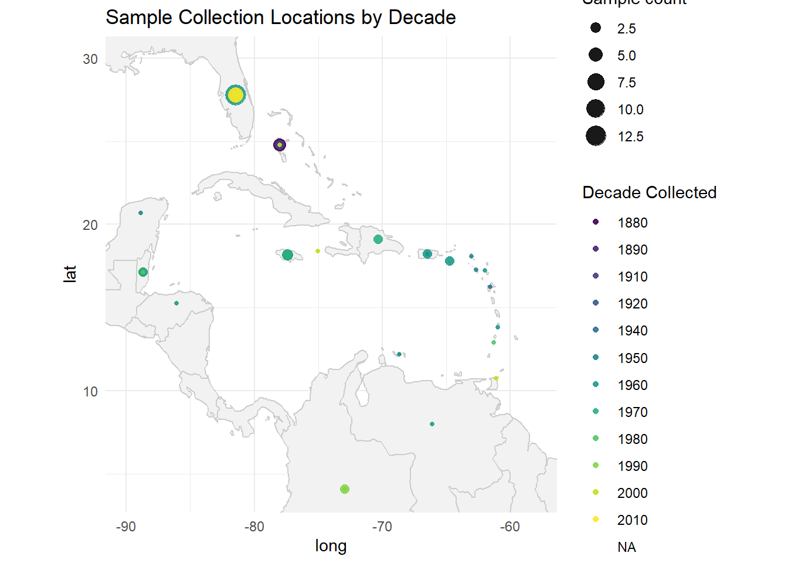

Checking E. tourneforti geographical distribution; Subsampling
SIFP_2025
Author
Kathleen Durkin
Published
July 8, 2025
E. tourneforti geographic distribution
I want to get a sense of where the E.tourneforti specimens were collected, since we ideally want to be sequencing specimens from roughly the same location.
# Loadlibrary(dplyr)
Attaching package: 'dplyr'
The following objects are masked from 'package:stats':
filter, lag
The following objects are masked from 'package:base':
intersect, setdiff, setequal, union
library(ggplot2)library(tidygeocoder)library(maps)library(leaflet)library(RColorBrewer)Eunicea <-read.csv("./data/Eunicea_nmnhsearch-20250707190456.csv")# format data# Extract year from the inconsistently formatted "Date.Collected" column# This command should just extract the first 4-digit number in each entryEunicea$Year.Collected <-as.numeric(sub(".*(\\d{4}).*", "\\1", Eunicea$Date.Collected))# Reduce scientifc names to just species namescleaned_Eunicea <-gsub("\\s*\\([^\\)]+\\)", "", Eunicea$Scientific.Name)Eunicea$Species.Clean <-sub("^((\\S+)\\s+(\\S+)).*$", "\\1", cleaned_Eunicea)# Grab just E. tournefortiE_tourneforti <- Eunicea[Eunicea$Species.Clean =="Eunicea tourneforti",]# Make a location variable which includes both country and state# If country was not listed, use the "Precise Locality" (E.g., Navassa Island, NW Point)E_tourneforti$Location <-ifelse( E_tourneforti$Country !="",paste0(E_tourneforti$Country, ", ", E_tourneforti$Province.State ),paste0(E_tourneforti$Precise.Locality))
Plot geographic distribution of collections
# From collection locations (e.g., "Bermuda"), get coordinatesE_tourneforti_coords <- E_tourneforti %>%geocode(Location, method ="osm", lat = Location.Lat, long = Location.Lon)
Passing 23 addresses to the Nominatim single address geocoder
Query completed in: 24 seconds
# Need to manually set the coordinates for Navassa IslandE_tourneforti_coords$Location.Lat[grepl("Navassa Island", E_tourneforti_coords$Location)] <-18.410281E_tourneforti_coords$Location.Lon[grepl("Navassa Island", E_tourneforti_coords$Location)] <--75.011887# Bin years by decade, for ease of mappingE_tourneforti_coords$Decade.Collected <-floor(E_tourneforti_coords$Year.Collected /10) *10# Group collections by location and decadeEt_summary <- E_tourneforti_coords %>%group_by(Decade.Collected, Location, Location.Lat, Location.Lon) %>%summarise(n =n(), .groups ="drop")
Ggplot map
world_map <-map_data("world")ggplot() +geom_polygon(data = world_map,aes(x = long, y = lat, group = group),fill ="gray95", color ="gray80") +geom_point(data = Et_summary,aes(x = Location.Lon, y = Location.Lat,size = n,color =as.factor(Decade.Collected)),alpha = .9) +# geom_text(data = Et_summary,# aes(x = Location.Lon, y = Location.Lat, label = Location),# vjust = -2, size = 2) +scale_size_continuous(name ="Sample count") +scale_color_viridis_d(name ="Decade Collected") +coord_fixed(xlim =c(-90, -58), ylim =c(4, 30), ratio =1.3) +theme_minimal() +labs(title ="Sample Collection Locations by Decade")
Warning: Removed 5 rows containing missing values or values outside the scale range
(`geom_point()`).

Also wanted to try out leaflet, which supports interactive maps
All specimens were collected in the Caribbean. Both the oldest and most recent collections appear to have been performed around the Florida keys and Bahamas, so I’d like to prioritize subsampling mid-age (1960s-1970s) specimens that were also collected from that area.
First subsampling:
Cleaned benchtop and gloves with bleach. Cleaned tools with bleach wipe, then DI wipe, then 95% EtoH wipe between each sample. To subsample, cut a ~2mm thick round from one stalk of the specimen. I Since these three specimens were quite thick, this yielded a fair amount of tissue. May need to cut longer sections for thin specimens (including, most likely, the modern ones).
Chose 3 large specimens from the 1960s as the first, since this decade has abundant and large collected specimens (just in case I took too much material while I’m still refamiliarizing myself).